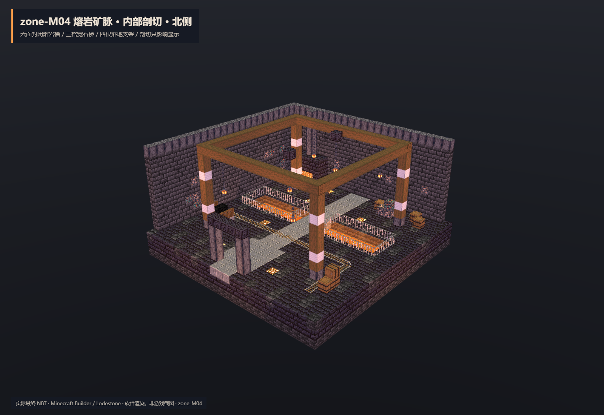
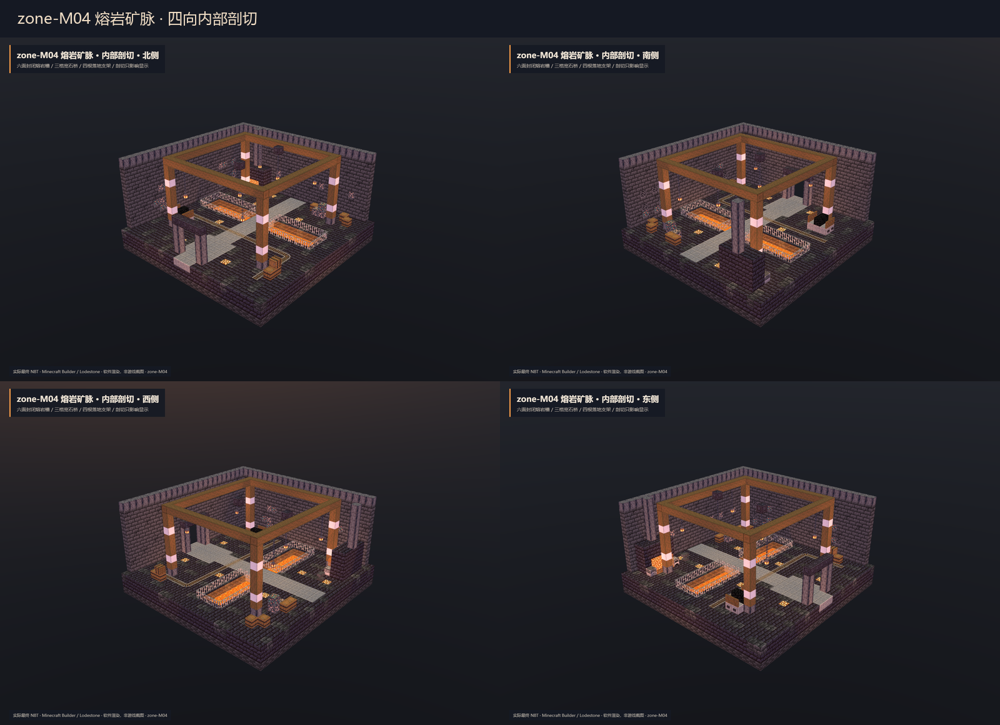
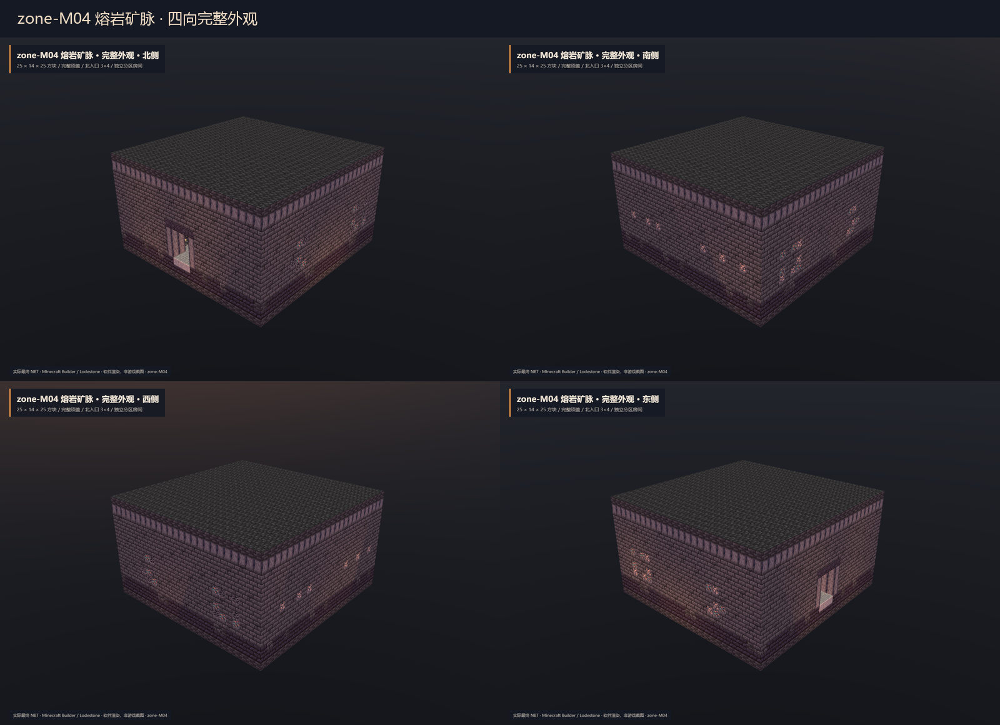
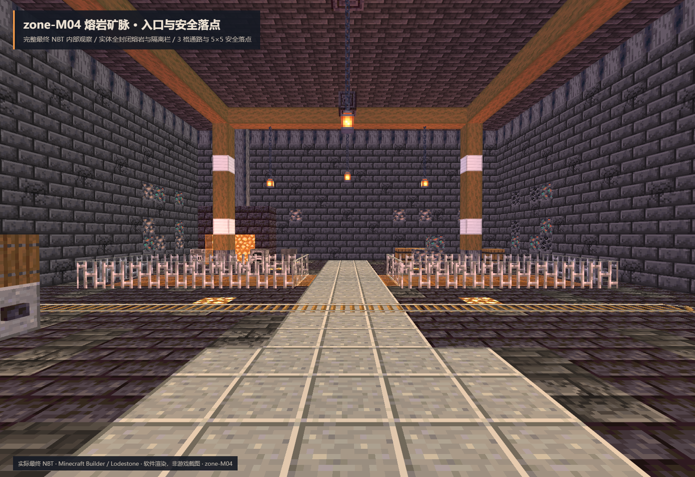
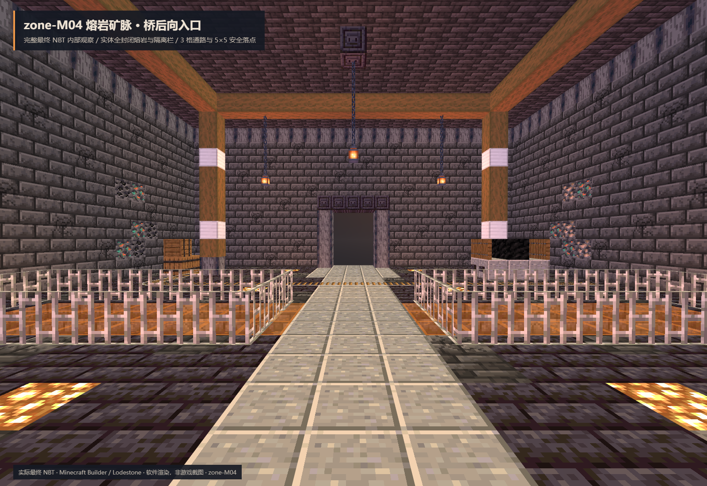

zone-M04 · 熔岩矿脉
独立分区房间 · 25×14×25 · 北入口 (12,3,0) · 安全点 (12,3,4)。57 格真实源熔岩六面封闭，透明盖板、铁栏与三格宽石桥；5×5 落点，四根落地支架，完整屋顶。
Forge47.4.10 四旋转共8次放置、400tick稳定复查与4332次原生熔岩点火检查通过；四份世界回采35000记录独立核对一致。仅隔离验证，未部署、未改正式文件或玩家存档。
NBT SHA-256: a52413917ad6cd7f9db2627b2a98fb198472e122a1aa9b7434666449808b2e67
最终成品预览
全部图片直接读取最终 NBT，经 Minecraft Builder/Lodestone 软件渲染。剖切只影响显示，非游戏截图。

四向内部

四向外部

完整结构内的入口与石桥


参考概念图